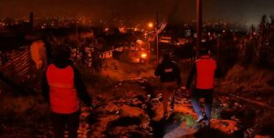

La edición 2026 de los Premios Platino 2026 entra este sábado en su momento más esperado con la gran gala final que reunirá a las principales figuras del cine y las series iberoamericanas en el Parque Xcaret. A diferencia de otros años, la premiación arrancó desde el jueves con una primera ceremonia enfocada en categorías técnicas y reconocimientos especiales. Allí comenzaron a entregarse varias de las estatuillas y también se vivieron algunos de los primeros momentos destacados del evento.

El evento natural se originó tras una jornada de intensas precipitaciones en el sur de Quito. Las lluvias inundaron la zona alta de Guamaní y causaron que una quebrada se desbordara. La corriente arrastró material vegetal y escombros que obstruyeron el sistema de alcantarillado en el sector afectado. La emergencia se produjo pasadas las 19:00 de este viernes.
El operativo terminó con una persona aprehendida y la incautación de decenas de paquetes de marihuana. La intervención ocurrió el 8 de mayo de 2026 en el circuito Nueva Prosperina, uno de los sectores priorizados por las autoridades debido a los hechos de violencia y actividades vinculadas al narcotráfico. La acción formó parte del operativo denominado: Cero Impunidad 14588 Encuentro 61 Jericho VI, ejecutado por la Dirección Nacional de Investigación Antidrogas de la Policía Nacional.
El evento natural se originó tras una jornada de intensas precipitaciones en el sur de Quito. Las lluvias inundaron la zona alta de Guamaní y causaron que una quebrada se desbordara. La corriente arrastró material vegetal y escombros que obstruyeron el sistema de alcantarillado en el sector afectado. La emergencia se produjo pasadas las 19:00 de este viernes.
El evento natural se originó tras una jornada de intensas precipitaciones en el sur de Quito. Las lluvias inundaron la zona alta de Guamaní y causaron que una quebrada se desbordara. La corriente arrastró material vegetal y escombros que obstruyeron el sistema de alcantarillado en el sector afectado. La emergencia se produjo pasadas las 19:00 de este viernes.